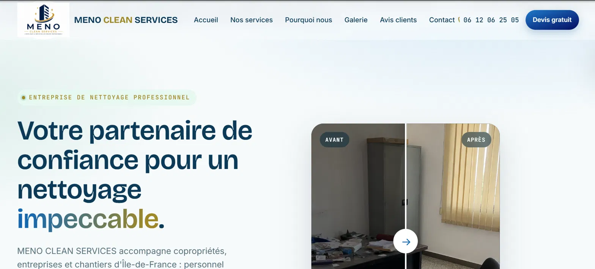
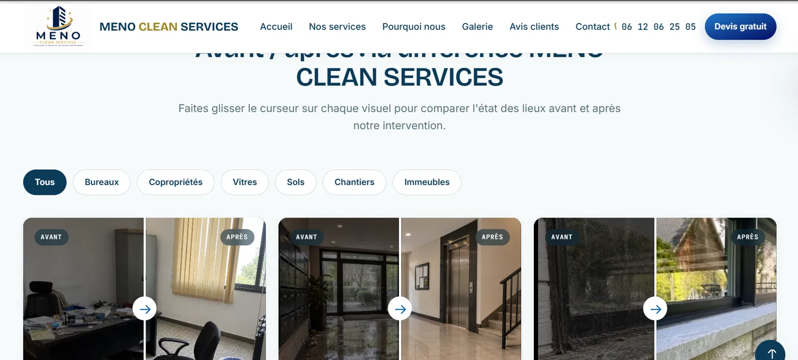

MENO CLEAN Services
Rewriting a live commercial website into a Symfony application

Context
A cleaning company operating in Île-de-France had a static HTML, CSS and JavaScript site. Every change to the service list meant editing the markup by hand in several places, and the contact form sent mail through a PHP script with credentials written directly into the file.
This is my only non-academic project. Someone depends on it working.
The problem
The site had no single source of truth. The service grid and the quote form's dropdown listed the same eighteen services in two separate places, so they drifted apart. Adding a service meant remembering every location it appeared in.
Design decisions
Services live in the database
Both the grid and the form dropdown read the same table. Adding a service is now one operation in one place, and the two can no longer disagree.
A quote keeps both a link and a frozen copy
A quote request stores a relation to the service and a copy of its label at the time of the request. Renaming a service must not retroactively change what a customer asked for two months ago.
Persist first, notify second
The request is written to the database before the email is sent. If the SMTP connection fails, the enquiry still exists and is flagged as unsent, rather than disappearing.
Filters derived from the data
Category filters are generated from the categories actually in use, which makes an empty filter structurally impossible.
Progressive enhancement
Real values are in the HTML; JavaScript only animates them. The site is fully readable with scripting disabled, and the forms still submit.
A bug worth remembering
Submitting an invalid form silently did nothing. No error in the console, no message on the page, no server exception. The validation was running correctly and the errors were being rendered, but the page never changed.
The cause was that Turbo, which intercepts form submissions, requires specific HTTP status codes: a redirect after success, and a 422 when re-rendering an invalid form. Symfony was returning a plain 200, which Turbo refuses, so it discarded the response entirely.
The lesson was not about Turbo. It was that a silent failure is the most expensive kind, and that when nothing at all happens, the problem is usually a contract being broken rather than code being wrong.

Result
A complete Symfony 8.1 application: eleven-section home page, three legal pages, two validated forms with CSRF protection and a honeypot field, SMTP notifications with reply-to routing, ten Stimulus controllers replacing the original scripts, structured data for search engines and a sitemap generated from the routes.
The original 443 lines of JavaScript came down to roughly 280, organised into single-purpose controllers.
What I took from it
- A single source of truth removes a class of bugs rather than fixing individual ones.
- Secrets belong in an ignored environment file. This project started with a Gmail application password committed in plain text; it was revoked, and the habit changed.
- Writing a manual test checklist from bugs you have already hit is faster than remembering them.